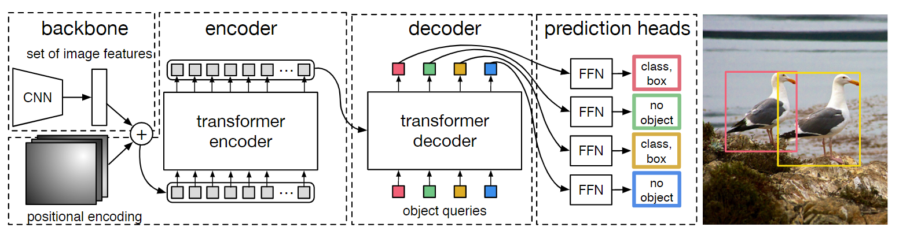
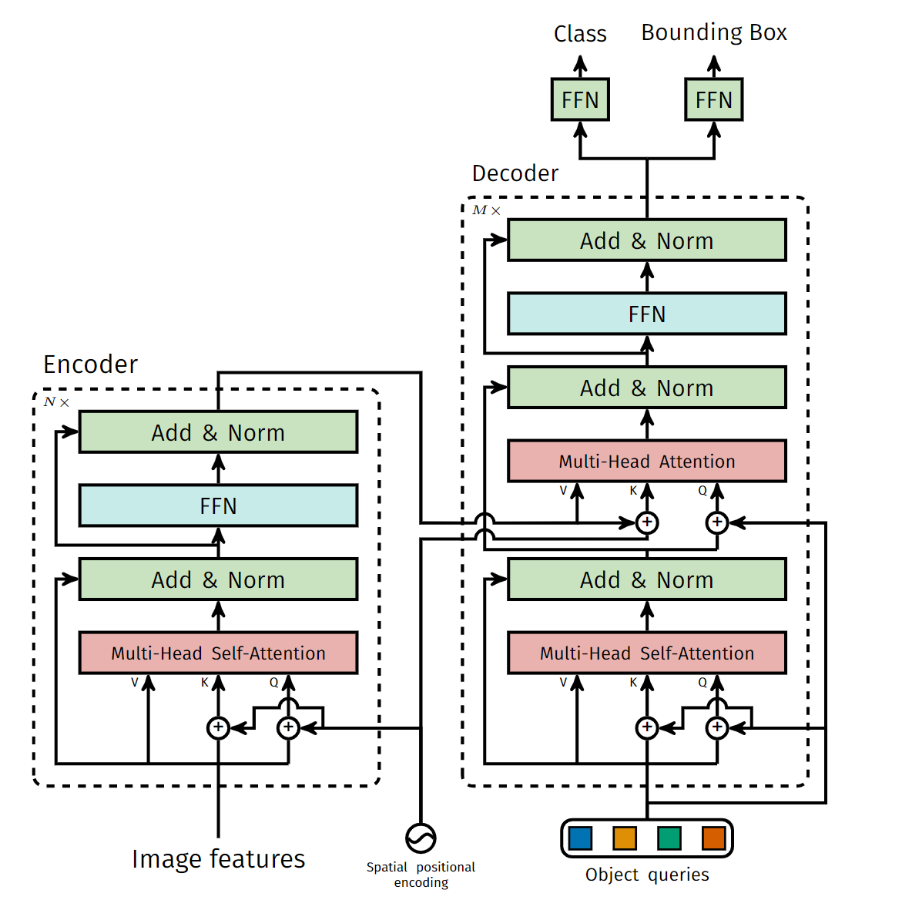
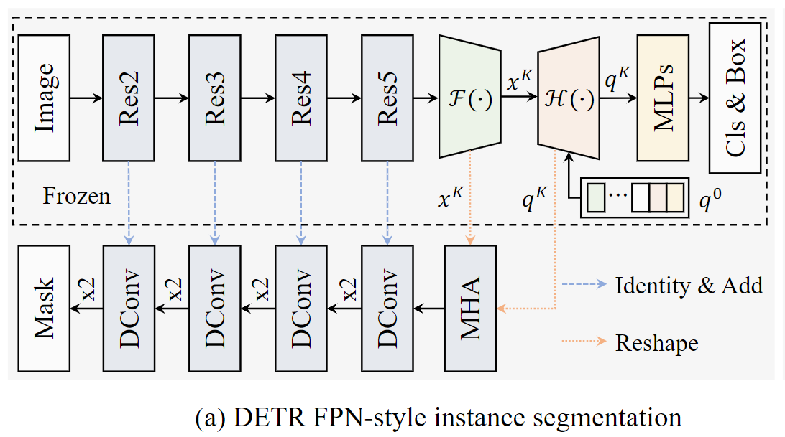

End-to-End Object Detection with Transformers https://arxiv.org/abs/2005.12872
DETR提出使用transformer，学习固定个数目标编码作为解码器的Q，来去除非极大化抑制的影响。具体来说首先使用CNN提取特征，然后将特征输入transformer的编码层，得到解码器的K和V，之后传入解码器，结合目标编码，产生解码结果，后通过MLP，映射到每一个对象的类别和边界框。和Faster RCNN转化为Mask RCNN一样，加入了mask head的DETR实现了分割任务。 

使用DETR进行实例分割 